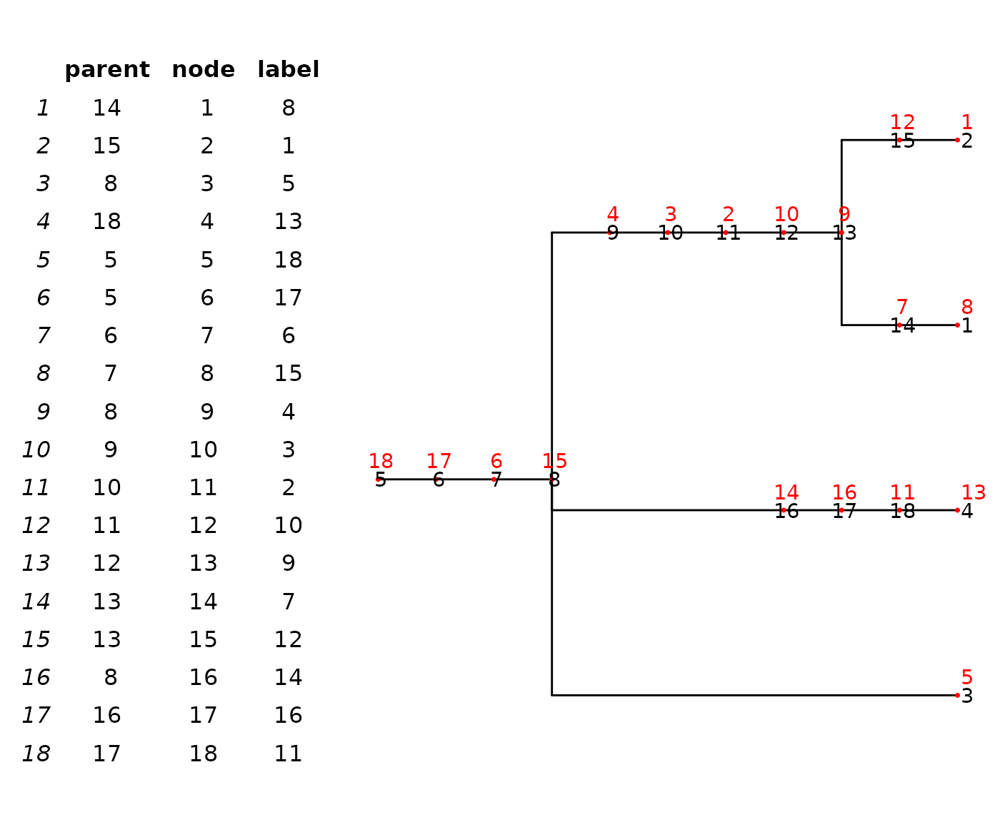
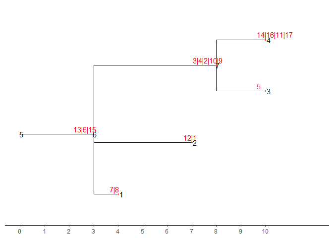

Stack_Mutation_Principle
Source:vignettes/Stack_Mutation_Principle.Rmd
Stack_Mutation_Principle.RmdEvery mutation tree from infSCITE is formatted as parent Vector in sample file. For example:
pvtre <- "11 2 3 14 14 16 8 6 9 1 15 8 10 14 5 13 17"We can reformat it to nwk that is a format easy to be visualization.
# reformat
reformatParentVector <- function(pvtre) {
lapply((strsplit(pvtre,"[ ]",)), function(x){
as.integer(x)
}) |> unlist()
}
pvtre1 = reformatParentVector(pvtre)
# convert to nwk
nwk_text <- parentVector2nwk(pvtre1,17)
nwk_text
#> [1] "((((((((((8)7,(1)12)9)10)2)3)4,5,(((13)11)16)14)15)6)17)18;"Plot a mutation tree. In order to clearly display the structure of the tree. Red points and red numbers represent a mutation node (label in table). Black numbers mean the order of node in tree, from leaves to internal nodes (parent and node in table).
tre <- treeio::read.newick(text = nwk_text)
ggtree(tre) +
geom_nodepoint(size = 1,color = "red",shape = 20) +
geom_nodelab(color = "red",nudge_y = 0.1)+
geom_nodelab(aes(label = node))+
geom_tippoint(size = 1,color = "red",shape = 20)+
geom_tiplab(color = "red",nudge_y = 0.1)+
geom_tiplab(aes(label = node))

Mutation Tree
tre_dat <- tre %>% as_tibble()
tre_dat
#> # A tibble: 18 × 3
#> parent node label
#> <int> <int> <chr>
#> 1 14 1 8
#> 2 15 2 1
#> 3 8 3 5
#> 4 18 4 13
#> 5 5 5 18
#> 6 5 6 17
#> 7 6 7 6
#> 8 7 8 15
#> 9 8 9 4
#> 10 9 10 3
#> 11 10 11 2
#> 12 11 12 10
#> 13 12 13 9
#> 14 13 14 7
#> 15 13 15 12
#> 16 8 16 14
#> 17 16 17 16
#> 18 17 18 11
tree data tree structure
Root, leaf and internal nodes will be kept and recode and all node in branch will move to the nearest node.
For example, node 6 and 7 with label 13 and 16 will move to node 8 and node 8 will re-code to 6 for root is 5 and re-label with 13,6,15

re-code and re-labeled tree